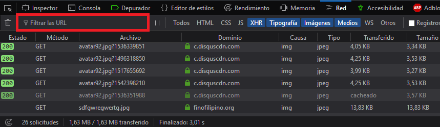
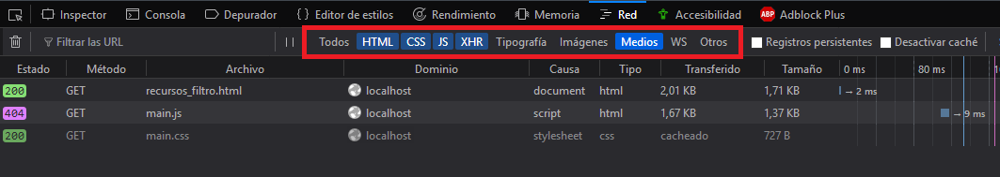

Cuando abramos la pestaña de red aparecerán montones de solicitudes, si estamos buscando alguna en concreto, podemos utilizar el filtro para buscar esa solicitud:

También podemos filtrar las solicitudes mostradas haciendo click en los tipos, a la derecha del filtro:
